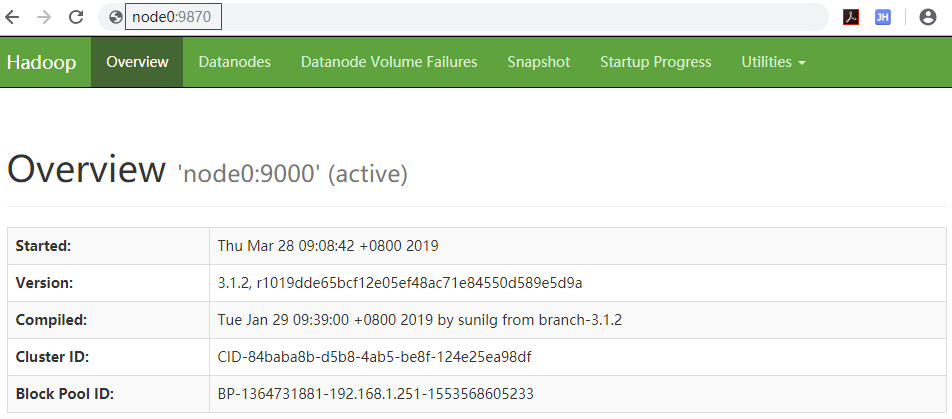
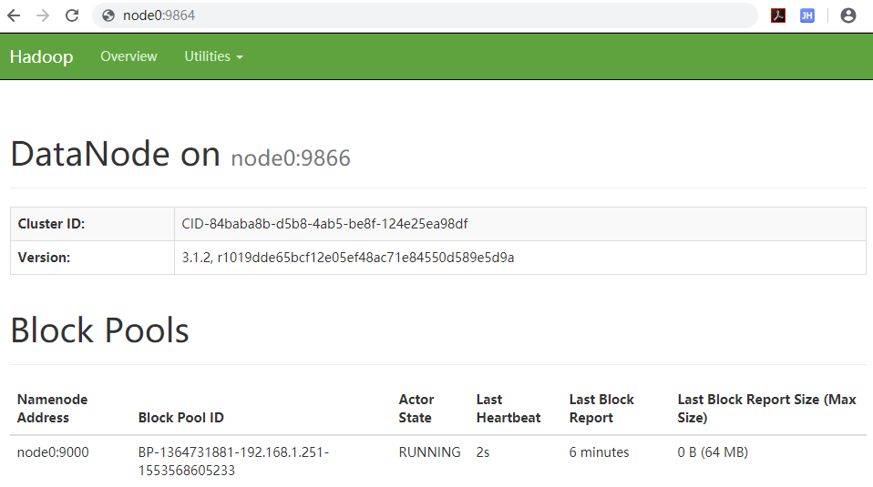
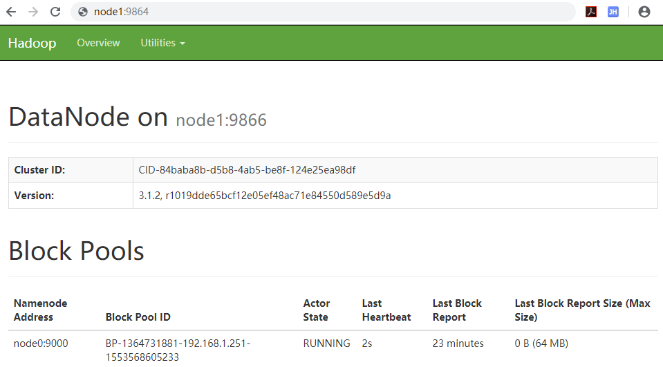
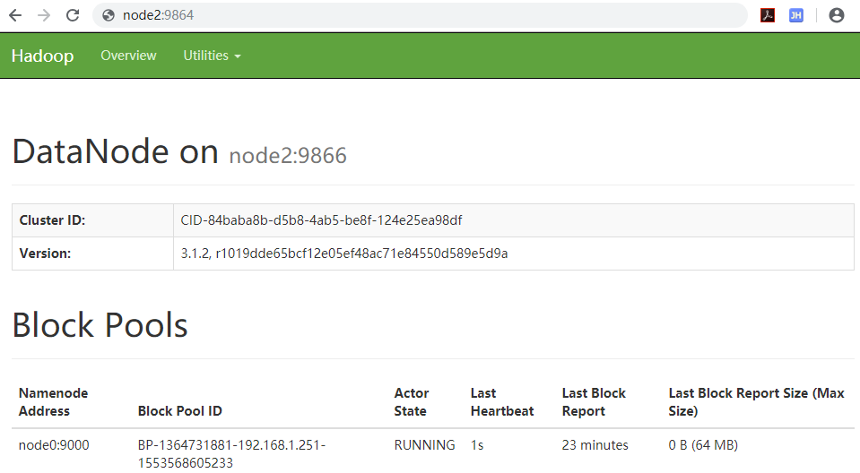
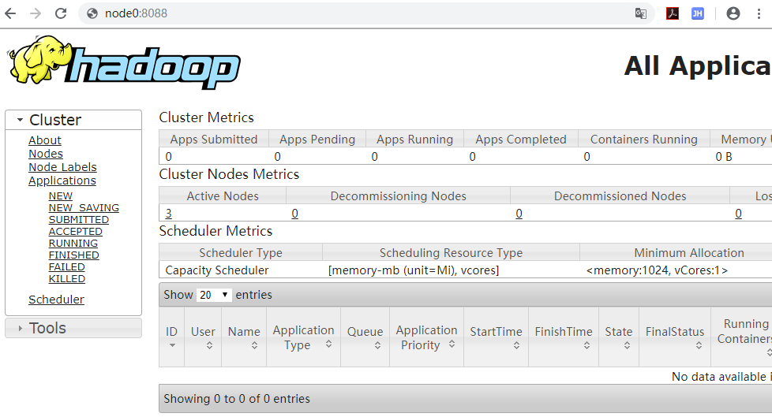
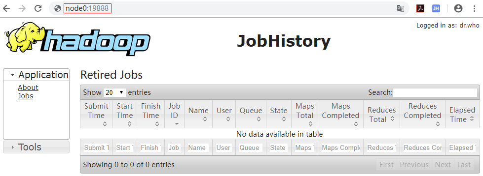

辽宁师范大学 • 张大为@https://daweizh.github.io/bd1/
复制已经测试通过的伪分布虚拟机目录node到node1和node2。修改最初虚拟机目录node为node0。
$ sudo vim /etc/cloud/cloud.cfg preserve_hostname: true
$ sudo vim /etc/hostname node0
$ sudo reboot
$ ifconfig ens33: flags=4163<UP,BROADCAST,RUNNING,MULTICAST> mtu 1500
$ sudo vim /etc/netplan/50-cloud-init.yaml network: ethernets: ens33: addresses: [192.168.1.251/24] gateway4: 192.168.1.254 dhcp4: true optional: true version: 2
$ sudo netplan apply
$ ifconfig ens33: flags=4163<UP,BROADCAST,RUNNING,MULTICAST> mtu 1500 inet 192.168.1.251 netmask 255.255.255.0 broadcast 192.168.1.255
$ sudo vim /etc/hosts 127.0.0.1 localhost.localdomain localhost ::1 localhost6.localdomain6 localhost6 192.168.1.251 node0 192.168.1.252 node1 192.168.1.253 node2 # The following lines are desirable for IPv6 capable hosts ::1 localhost ip6-localhost ip6-loopback fe00::0 ip6-localnet ff02::1 ip6-allnodes ff02::2 ip6-allrouters ff02::3 ip6-allhosts
$ sudo vim /etc/systemd/resolved.conf [Resolve] DNS=210.47.208.6 114.114.114.114 #FallbackDNS= #Domains= #LLMNR=no #MulticastDNS=no #DNSSEC=no #Cache=yes #DNSStubListener=yes
$ sudo reboot
$ ping www.lnnu.edu.cn PING www.lnnu.edu.cn (210.47.208.201) 56(84) bytes of data. 64 bytes from 210.47.208.201 (210.47.208.201): icmp_seq=1 ttl=60 time=1.22 ms 64 bytes from 210.47.208.201 (210.47.208.201): icmp_seq=2 ttl=60 time=1.88 ms 64 bytes from 210.47.208.201 (210.47.208.201): icmp_seq=3 ttl=60 time=1.61 ms ^C --- www.lnnu.edu.cn ping statistics --- 3 packets transmitted, 3 received, 0% packet loss, time 2003ms rtt min/avg/max/mdev = 1.223/1.573/1.884/0.273 ms $ ping node1 $ ping node2
$ sudo vim /etc/cloud/cloud.cfg preserve_hostname: true
$ sudo vim /etc/hostname node1
$ sudo reboot
$ ifconfig ens33: flags=4163<UP,BROADCAST,RUNNING,MULTICAST> mtu 1500
$ sudo vim /etc/netplan/50-cloud-init.yaml network: ethernets: ens33: addresses: [192.168.1.252/24] gateway4: 192.168.1.254 dhcp4: true optional: true version: 2
$ sudo netplan apply
$ ifconfig ens33: flags=4163<UP,BROADCAST,RUNNING,MULTICAST> mtu 1500 inet 192.168.1.252 netmask 255.255.255.0 broadcast 192.168.1.255
$ sudo vim /etc/hosts 127.0.0.1 localhost.localdomain localhost ::1 localhost6.localdomain6 localhost6 192.168.1.251 node0 192.168.1.252 node1 192.168.1.253 node2 # The following lines are desirable for IPv6 capable hosts ::1 localhost ip6-localhost ip6-loopback fe00::0 ip6-localnet ff02::1 ip6-allnodes ff02::2 ip6-allrouters ff02::3 ip6-allhosts
$ sudo vim /etc/systemd/resolved.conf [Resolve] DNS=210.47.208.6 114.114.114.114 #FallbackDNS= #Domains= #LLMNR=no #MulticastDNS=no #DNSSEC=no #Cache=yes #DNSStubListener=yes
$ sudo reboot
$ ping www.lnnu.edu.cn PING www.lnnu.edu.cn (210.47.208.201) 56(84) bytes of data. 64 bytes from 210.47.208.201 (210.47.208.201): icmp_seq=1 ttl=60 time=1.22 ms 64 bytes from 210.47.208.201 (210.47.208.201): icmp_seq=2 ttl=60 time=1.88 ms 64 bytes from 210.47.208.201 (210.47.208.201): icmp_seq=3 ttl=60 time=1.61 ms ^C --- www.lnnu.edu.cn ping statistics --- 3 packets transmitted, 3 received, 0% packet loss, time 2003ms rtt min/avg/max/mdev = 1.223/1.573/1.884/0.273 ms $ ping node0 $ ping node2
$ sudo vim /etc/cloud/cloud.cfg preserve_hostname: true
$ sudo vim /etc/hostname node2
$ sudo reboot
$ ifconfig ens33: flags=4163<UP,BROADCAST,RUNNING,MULTICAST> mtu 1500
$ sudo vim /etc/netplan/50-cloud-init.yaml network: ethernets: ens33: addresses: [192.168.1.253/24] gateway4: 192.168.1.254 dhcp4: true optional: true version: 2
$ sudo netplan apply
$ ifconfig ens33: flags=4163<UP,BROADCAST,RUNNING,MULTICAST> mtu 1500 inet 192.168.1.253 netmask 255.255.255.0 broadcast 192.168.1.255
$ sudo vim /etc/hosts 127.0.0.1 localhost.localdomain localhost ::1 localhost6.localdomain6 localhost6 192.168.1.251 node0 192.168.1.252 node1 192.168.1.253 node2 # The following lines are desirable for IPv6 capable hosts ::1 localhost ip6-localhost ip6-loopback fe00::0 ip6-localnet ff02::1 ip6-allnodes ff02::2 ip6-allrouters ff02::3 ip6-allhosts
$ sudo vim /etc/systemd/resolved.conf [Resolve] DNS=210.47.208.6 114.114.114.114 #FallbackDNS= #Domains= #LLMNR=no #MulticastDNS=no #DNSSEC=no #Cache=yes #DNSStubListener=yes
$ sudo reboot
$ ping www.lnnu.edu.cn PING www.lnnu.edu.cn (210.47.208.201) 56(84) bytes of data. 64 bytes from 210.47.208.201 (210.47.208.201): icmp_seq=1 ttl=60 time=1.22 ms 64 bytes from 210.47.208.201 (210.47.208.201): icmp_seq=2 ttl=60 time=1.88 ms 64 bytes from 210.47.208.201 (210.47.208.201): icmp_seq=3 ttl=60 time=1.61 ms ^C --- www.lnnu.edu.cn ping statistics --- 3 packets transmitted, 3 received, 0% packet loss, time 2003ms rtt min/avg/max/mdev = 1.223/1.573/1.884/0.273 ms $ ping node0 $ ping node1
$ ssh-keygen -t rsa -P '' -f ~/.ssh/id_rsa ... ... Overwrite (y/n)? y ...
$ ssh-keygen -y -f ~/.ssh/id_rsa ssh-rsa ... ...
$ cat ~/.ssh/id_rsa.pub > ~/.ssh/authorized_keys $ cat ~/.ssh/authorized_keys ssh-rsa .... ... jack@node0
$ ssh-keygen -t rsa -P '' -f ~/.ssh/id_rsa ... ... Overwrite (y/n)? y ... ...
$ ssh-keygen -y -f ~/.ssh/id_rsa ssh-rsa ... ...
$ cat ~/.ssh/id_rsa.pub | ssh node0 'cat ->> /home/jack/.ssh/authorized_keys' Warning: Permanently added the ECDSA host key for IP address '192.168.1.251' to the list of known hosts. jack@node0's password: jack@node1:~$
$ ssh-keygen -t rsa -P '' -f ~/.ssh/id_rsa ... ... Overwrite (y/n)? y ...
$ ssh-keygen -y -f ~/.ssh/id_rsa ssh-rsa ... ...
$ cat ~/.ssh/id_rsa.pub | ssh node0 'cat ->> /home/jack/.ssh/authorized_keys' Warning: Permanently added the ECDSA host key for IP address '192.168.1.251' to the list of known hosts. jack@node0's password: jack@node2:~$
$ cat ~/.ssh/authorized_keys ssh-rsa ... ... jack@node0 ssh-rsa ... ... jack@node1 ssh-rsa ... ... jack@node2
$ scp /home/jack/.ssh/authorized_keys node1:/home/jack/.ssh/ ... ... Are you sure you want to continue connecting (yes/no)? yes Warning: Permanently added 'node1' (ECDSA) to the list of known hosts. jack@node1's password: authorized_keys 100% 1176 917.1KB/s 00:00 jack@node0:~$
$ scp /home/jack/.ssh/authorized_keys node2:/home/jack/.ssh/ ... ... Are you sure you want to continue connecting (yes/no)? yes Warning: Permanently added 'node2,192.168.1.253' (ECDSA) to the list of known hosts. jack@node2's password: authorized_keys 100% 1176 1.4MB/s 00:00 jack@node0:~$
jack@node0:~$ ssh node1 Welcome to Ubuntu 18.04.2 LTS (GNU/Linux 4.15.0-46-generic x86_64) ... ... Last login: Wed Mar 20 03:06:01 2019 from 192.168.1.103
jack@node1:~$ exit logout Connection to node1 closed. jack@node0:~$
jack@node0:~$ ssh node2 Welcome to Ubuntu 18.04.2 LTS (GNU/Linux 4.15.0-46-generic x86_64) ... ... Last login: Wed Mar 20 04:52:56 2019 from 192.168.1.251
jack@node2:~$ exit logout Connection to node2 closed. jack@node0:~$
jack@node1:~$ ssh node0 Welcome to Ubuntu 18.04.2 LTS (GNU/Linux 4.15.0-46-generic x86_64) ... ... Last login: Wed Mar 20 03:13:25 2019 from 192.168.1.103
jack@node0:~$ exit logout Connection to node0 closed. jack@node1:~$
jack@node1:~$ ssh node2 ... ... Are you sure you want to continue connecting (yes/no)? yes ... ... Last login: Wed Mar 20 05:19:48 2019 from 192.168.1.251
jack@node2:~$ exit logout Connection to node2 closed. jack@node1:~$
jack@node2:~$ ssh node0 Welcome to Ubuntu 18.04.2 LTS (GNU/Linux 4.15.0-46-generic x86_64) ... ... Last login: Wed Mar 20 05:46:49 2019 from 192.168.1.252
jack@node0:~$ exit logout Connection to node0 closed. jack@node2:~$
jack@node2:~$ ssh node1 ... ... Are you sure you want to continue connecting (yes/no)? yes ... ... Last login: Wed Mar 20 04:52:34 2019 from 192.168.1.251
jack@node1:~$ exit logout Connection to node1 closed. jack@node2:~$
对node0,node1,node2节点分别做如下操作：
> $ sudo vim /usr/bd/hadoop-3.1.2/etc/hadoop/hadoop-env.sh
... ... # The java implementation to use. By default, this environment # variable is REQUIRED on ALL platforms except OS X! export JAVA_HOME=/usr/bd/jdk1.8.0_202 ... ... # Where (primarily) daemon log files are stored. # ${HADOOP_HOME}/logs by default. # Java property: hadoop.log.dir # export HADOOP_LOG_DIR=${HADOOP_HOME}/logs export HADOOP_LOG_DIR=/usr/bd/logs ... ...
$ sudo vim /usr/bd/hadoop-3.1.2/etc/hadoop/workers node0 node1 node2
$ sudo vim /usr/bd/hadoop-3.1.2/etc/hadoop/core-site.xml
<configuration> <property> <name>fs.defaultFS</name> <value>hdfs://node0:9000</value> </property> <property> <name>hadoop.tmp.dir</name> <value>/usr/bd/tmp</value> <description>for hadoop temporary directories.</description> </property> </configuration>
$ sudo vim /usr/bd/hadoop-3.1.2/etc/hadoop/hdfs-site.xml
<configuration> <property> <name>dfs.replication</name> <value>2</value> </property> <!-- 此配置的缺省端口为9870 <property> <name>dfs.namenode.http-address</name> <value>node0:50070</value> </property> --> <property> <name>dfs.namenode.name.dir</name> <value>file:/usr/bd/dfs/name</value> </property> <property> <name>dfs.datanode.data.dir</name> <value>file:/usr/bd/dfs/data</value> </property> <property> <name>dfs.permissions</name> <value>false</value> </property> <property> <name>dfs.namenode.secondary.http-address</name> <value>node0:9002</value> </property> <property> <name>dfs.webhdfs.enabled</name> <value>true</value> </property> </configuration>
$ sudo vim /usr/bd/hadoop-3.1.2/etc/hadoop/mapred-site.xml
<configuration> <property> <name>mapreduce.jobtracker.address</name> <value>node0:9001</value> </property> <property> <name>yarn.app.mapreduce.am.env</name> <value>HADOOP_MAPRED_HOME=/usr/bd/hadoop-3.1.2</value> </property> <property> <name>mapreduce.map.env</name> <value>HADOOP_MAPRED_HOME=/usr/bd/hadoop-3.1.2</value> </property> <property> <name>mapreduce.reduce.env</name> <value>HADOOP_MAPRED_HOME=/usr/bd/hadoop-3.1.2</value> </property> <property> <name>mapreduce.framework.name</name> <value>yarn</value> </property> <property> <name>mapreduce.jobhistory.address</name> <value>node0:10020</value> </property> <property> <name>mapreduce.jobhistory.webapp.address</name> <value>node0:19888</value> </property> </configuration>
$ sudo vim /usr/bd/hadoop-3.1.2/etc/hadoop/yarn-site.xml
<configuration> <!-- Site specific YARN configuration properties --> <property> <name>yarn.nodemanager.aux-services</name> <value>mapreduce_shuffle</value> </property> <property> <name>yarn.nodemanager.vmem-check-enabled</name> <value>false</value> </property> <property> <name>yarn.nodemanager.aux-services.mapreduce.shuffle.class</name> <value>org.apache.hadoop.mapred.ShuffleHandler</value> </property> <property> <name>yarn.resourcemanager.address</name> <value>node0:8032</value> </property> <property> <name>yarn.resourcemanager.scheduler.address</name> <value>node0:8030</value> </property> <property> <name>yarn.resourcemanager.resource-tracker.address</name> <value>node0:8035</value> </property> <property> <name>yarn.resourcemanager.admin.address</name> <value>node0:8033</value> </property> <property> <name>yarn.resourcemanager.webapp.address</name> <value>node0:8088</value> </property> </configuration>
$ sudo rm -rf /usr/bd/dfs/data/current/ $ ls /usr/bd/dfs/data $
$ sudo rm -rf /usr/bd/dfs/name/current/ $ ls /usr/bd/dfs/name $
以下操作均在node0上操作：
$ hdfs namenode -format 2019-03-20 07:03:56,515 INFO namenode.NameNode: STARTUP_MSG: /************************************************************ STARTUP_MSG: Starting NameNode STARTUP_MSG: host = node0/192.168.1.251 STARTUP_MSG: args = [-format] STARTUP_MSG: version = 3.1.2 ... ... Re-format filesystem in Storage Directory root= /usr/bd/dfs/name; location= null ? (Y or N) Y ... ... 2019-03-20 07:04:29,913 INFO namenode.NameNode: SHUTDOWN_MSG: /************************************************************ SHUTDOWN_MSG: Shutting down NameNode at node0/192.168.1.251 ************************************************************/
jack@node0:~$ start-dfs.sh Starting namenodes on [node0] node0: Warning: Permanently added the ECDSA host key for IP address '192.168.1.251' to the list of known hosts. Starting datanodes Starting secondary namenodes [node0]
jack@node0:~$ jps 2960 NameNode 3155 DataNode 3399 SecondaryNameNode 3561 Jps
jack@node1:~$ jps 1939 Jps 1918 DataNode
jack@node2:~$ jps 1827 DataNode 1940 Jps
jack@node0:~$ start-yarn.sh Starting resourcemanager Starting nodemanagers
jack@node0:/usr/bd/hadoop-3.1.2$ jps 20534 SecondaryNameNode 21142 Jps 20087 NameNode 20282 DataNode 21020 NodeManager 20830 ResourceManager
jack@node1:/usr/bd/dfs/name$ jps 20225 Jps 20102 NodeManager 19897 DataNode
jack@node2:/usr/bd/dfs/name$ jps 20356 Jps 20233 NodeManager 20030 DataNode
jack@node0:~$ mr-jobhistory-daemon.sh start historyserver
WARNING: Use of this script to start the MR JobHistory daemon is deprecated.
WARNING: Attempting to execute replacement "mapred --daemon start" instead.
jack@node0:/usr/bd/hadoop-3.1.2$ jps 21540 Jps 20534 SecondaryNameNode 20087 NameNode 21479 JobHistoryServer 20282 DataNode 21020 NodeManager 20830 ResourceManager
jack@node0:/usr/bd$ vim hadoop-3.1.2/sbin/stopall.sh
#!/usr/bin/env bash # Stop all hadoop daemons. Run this on master node. echo "This script is Deprecated. Instead use stop-dfs.sh and stop-yarn.sh" echo "Stoping historyserver..." mr-jobhistory-daemon.sh stop historyserver echo "Stoping dfs..." stop-dfs.sh echo "Stoping yarn..." stop-yarn.sh
jack@node0:~$ stopall.sh This script is Deprecated. Instead use stop-dfs.sh and stop-yarn.sh Stoping historyserver... WARNING: Use of this script to stop the MR JobHistory daemon is deprecated. WARNING: Attempting to execute replacement "mapred --daemon stop" instead. Stoping dfs... Stopping namenodes on [node0] Stopping datanodes Stopping secondary namenodes [node0] Stoping yarn... Stopping nodemanagers Stopping resourcemanager
jack@node0:~$ jps 7156 Jps
jack@node1:~$ jps 7118 Jps
jack@node2:~$ jps 2345 Jps
jack@node0:/usr/bd$ vim hadoop-3.1.2/sbin/startall.sh
#!/usr/bin/env bash # Start all hadoop daemons. Run this on master node. echo "This script is Deprecated. Instead use start-dfs.sh and start-yarn.sh" echo "Starting yarn..." start-yarn.sh echo "Starting dfs..." start-dfs.sh echo "Starting historyserver..." mr-jobhistory-daemon.sh start historyserver
jack@node0:~$ startall.sh This script is Deprecated. Instead use start-dfs.sh and start-yarn.sh Starting yarn... Starting resourcemanager Starting nodemanagers Starting dfs... Starting namenodes on [node0] Starting datanodes Starting secondary namenodes [node0] Starting historyserver... WARNING: Use of this script to start the MR JobHistory daemon is deprecated. WARNING: Attempting to execute replacement "mapred --daemon start" instead.
jack@node0:~$ jps 8720 Jps 8001 NameNode 7442 NodeManager 8451 SecondaryNameNode 8661 JobHistoryServer 7238 ResourceManager 8198 DataNode
jack@node1:/usr/bd/hadoop-3.1.2$ jps 2400 NodeManager 2642 DataNode 2746 Jps
jack@node2:/usr/bd/hadoop-3.1.2$ jps 2688 DataNode 2790 Jps 2445 NodeManager
jack@node0:~$ stopall.sh This script is Deprecated. Instead use stop-dfs.sh and stop-yarn.sh Stoping historyserver... WARNING: Use of this script to stop the MR JobHistory daemon is deprecated. WARNING: Attempting to execute replacement "mapred --daemon stop" instead. Stoping dfs... Stopping namenodes on [node0] Stopping datanodes Stopping secondary namenodes [node0] Stoping yarn... Stopping nodemanagers Stopping resourcemanager
jack@node0:~$ jps 9786 Jps jack@node0:~$
jack@node1:~$ jps 4174 Jps jack@node1:~$
jack@node2:~$ jps 4000 Jps jack@node2:~$
jack@node0:~$ startall.sh This script is Deprecated. Instead use start-dfs.sh and start-yarn.sh Starting yarn... Starting resourcemanager Starting nodemanagers Starting dfs... Starting namenodes on [node0] Starting datanodes Starting secondary namenodes [node0] Starting historyserver... WARNING: Use of this script to start the MR JobHistory daemon is deprecated. WARNING: Attempting to execute replacement "mapred --daemon start" instead.
jack@node0:~$ hdfs dfs -mkdir /user jack@node0:~$ hdfs dfs -mkdir /user/jack jack@node0:~$ hdfs dfs -mkdir /user/jack/input
jack@node0:~$ hdfs dfs -put /usr/bd/hadoop-3.1.2/etc/hadoop/*.xml /user/jack/input
jack@node0:~$ hdfs dfs -ls /user/jack/input Found 9 items -rw-r--r-- 2 jack supergroup 8260 2019-03-20 08:04 /user/jack/input/capacity-scheduler.xml -rw-r--r-- 2 jack supergroup 1051 2019-03-20 08:04 /user/jack/input/core-site.xml -rw-r--r-- 2 jack supergroup 11392 2019-03-20 08:04 /user/jack/input/hadoop-policy.xml -rw-r--r-- 2 jack supergroup 1522 2019-03-20 08:04 /user/jack/input/hdfs-site.xml -rw-r--r-- 2 jack supergroup 620 2019-03-20 08:04 /user/jack/input/httpfs-site.xml -rw-r--r-- 2 jack supergroup 3518 2019-03-20 08:04 /user/jack/input/kms-acls.xml -rw-r--r-- 2 jack supergroup 682 2019-03-20 08:04 /user/jack/input/kms-site.xml -rw-r--r-- 2 jack supergroup 1612 2019-03-20 08:04 /user/jack/input/mapred-site.xml -rw-r--r-- 2 jack supergroup 1716 2019-03-20 08:04 /user/jack/input/yarn-site.xml
jack@node0:/usr/bd/hadoop-3.1.2$ hadoop jar share/hadoop/mapreduce/hadoop-mapreduce-examples-3.1.2.jar wordcount /user/jack/input /user/jack/output 2019-03-20 08:06:01,828 INFO client.RMProxy: Connecting to ResourceManager at node0/192.168.1.251:8032 2019-03-20 08:06:03,044 INFO mapreduce.JobResourceUploader: Disabling Erasure Coding for path: /tmp/hadoop-yarn/staging/jack/.staging/job_1553068932549_0001 2019-03-20 08:06:03,548 INFO input.FileInputFormat: Total input files to process : 9 2019-03-20 08:06:03,688 INFO mapreduce.JobSubmitter: number of splits:9 2019-03-20 08:06:04,136 INFO mapreduce.JobSubmitter: Submitting tokens for job: job_1553068932549_0001 2019-03-20 08:06:04,138 INFO mapreduce.JobSubmitter: Executing with tokens: [] 2019-03-20 08:06:04,915 INFO conf.Configuration: resource-types.xml not found 2019-03-20 08:06:04,917 INFO resource.ResourceUtils: Unable to find 'resource-types.xml'. 2019-03-20 08:06:06,590 INFO impl.YarnClientImpl: Submitted application application_1553068932549_0001 2019-03-20 08:06:07,831 INFO mapreduce.Job: The url to track the job: http://node0:8088/proxy/application_1553068932549_0001/ 2019-03-20 08:06:07,874 INFO mapreduce.Job: Running job: job_1553068932549_0001 2019-03-20 08:06:37,344 INFO mapreduce.Job: Job job_1553068932549_0001 running in uber mode : false 2019-03-20 08:06:37,348 INFO mapreduce.Job: map 0% reduce 0% 2019-03-20 08:07:11,095 INFO mapreduce.Job: map 11% reduce 0% 2019-03-20 08:07:48,732 INFO mapreduce.Job: map 11% reduce 4% 2019-03-20 08:08:15,232 INFO mapreduce.Job: map 22% reduce 4% 2019-03-20 08:08:18,409 INFO mapreduce.Job: map 22% reduce 7% 2019-03-20 08:08:19,634 INFO mapreduce.Job: map 33% reduce 7% 2019-03-20 08:08:24,592 INFO mapreduce.Job: map 33% reduce 11% 2019-03-20 08:08:29,340 INFO mapreduce.Job: map 44% reduce 11% 2019-03-20 08:08:30,458 INFO mapreduce.Job: map 44% reduce 15% 2019-03-20 08:09:02,494 INFO mapreduce.Job: map 56% reduce 15% 2019-03-20 08:09:10,912 INFO mapreduce.Job: map 67% reduce 22% 2019-03-20 08:11:39,987 INFO mapreduce.Job: map 100% reduce 22% 2019-03-20 08:11:49,729 INFO mapreduce.Job: map 100% reduce 100% 2019-03-20 08:12:05,984 INFO mapreduce.Job: Job job_1553068932549_0001 completed successfully 2019-03-20 08:12:06,547 INFO mapreduce.Job: Counters: 55 File System Counters FILE: Number of bytes read=22297 FILE: Number of bytes written=2207687 FILE: Number of read operations=0 FILE: Number of large read operations=0 FILE: Number of write operations=0 HDFS: Number of bytes read=31396 HDFS: Number of bytes written=11092 HDFS: Number of read operations=32 HDFS: Number of large read operations=0 HDFS: Number of write operations=2 Job Counters Killed map tasks=8 Launched map tasks=17 Launched reduce tasks=1 Data-local map tasks=8 Rack-local map tasks=9 Total time spent by all maps in occupied slots (ms)=2225576 Total time spent by all reduces in occupied slots (ms)=275532 Total time spent by all map tasks (ms)=2225576 Total time spent by all reduce tasks (ms)=275532 Total vcore-milliseconds taken by all map tasks=2225576 Total vcore-milliseconds taken by all reduce tasks=275532 Total megabyte-milliseconds taken by all map tasks=2278989824 Total megabyte-milliseconds taken by all reduce tasks=282144768 Map-Reduce Framework Map input records=831 Map output records=3150 Map output bytes=40096 Map output materialized bytes=22345 Input split bytes=1023 Combine input records=3150 Combine output records=1269 Reduce input groups=625 Reduce shuffle bytes=22345 Reduce input records=1269 Reduce output records=625 Spilled Records=2538 Shuffled Maps =9 Failed Shuffles=0 Merged Map outputs=9 GC time elapsed (ms)=65818 CPU time spent (ms)=180360 Physical memory (bytes) snapshot=2662285312 Virtual memory (bytes) snapshot=26279993344 Total committed heap usage (bytes)=2411200512 Peak Map Physical memory (bytes)=280350720 Peak Map Virtual memory (bytes)=2629558272 Peak Reduce Physical memory (bytes)=242757632 Peak Reduce Virtual memory (bytes)=2638413824 Shuffle Errors BAD_ID=0 CONNECTION=0 IO_ERROR=0 WRONG_LENGTH=0 WRONG_MAP=0 WRONG_REDUCE=0 File Input Format Counters Bytes Read=30373 File Output Format Counters Bytes Written=11092
jack@node0:/usr/bd/hadoop-3.1.2$ hdfs dfs -cat /user/jack/output/* "*" 21 "AS 9 ... ... who 3 will 12 with 28 work 1 writing, 9 you 10 zero 2
hadoop jar hadoop-mapreduce-examples-3.1.12.jar pi 5 5 input output
hadoop jar hadoop-mapreduce-examples-3.1.2.jar wordmean input output
hadoop jar hadoop-mapreduce-examples-3.1.2.jar wordmedian input output
jack@node0:~$ stopall.sh This script is Deprecated. Instead use stop-dfs.sh and stop-yarn.sh Stoping historyserver... WARNING: Use of this script to stop the MR JobHistory daemon is deprecated. WARNING: Attempting to execute replacement "mapred --daemon stop" instead. Stoping dfs... Stopping namenodes on [node0] Stopping datanodes Stopping secondary namenodes [node0] Stoping yarn... Stopping nodemanagers Stopping resourcemanager
jack@node0:~$ jps 5199 Jps
jack@node0:~$ ssh node1 ... ... Last login: Thu Mar 28 01:00:31 2019 from 192.168.1.103
jack@node1:~$ jps 2696 Jps
jack@node1:~$ exit logout Connection to node1 closed.
jack@node0:~$ ssh node2 ... ... Last login: Thu Mar 28 01:04:26 2019 from 192.168.1.103
jack@node2:~$ jps 3264 Jps
jack@node2:~$ exit logout Connection to node2 closed.
jack@node0:~$ ssh node1 ... ... Last login: Tue Apr 2 03:18:06 2019 from 192.168.1.251
jack@node1:~$ sudo shutdown -h now jack@node0:~$
jack@node0:~$ ssh node2 ... ... Last login: Tue Apr 2 03:18:45 2019 from 192.168.1.251
jack@node2:~$ sudo shutdown -h now jack@node0:~$
jack@node0:~$ sudo shutdown -h now